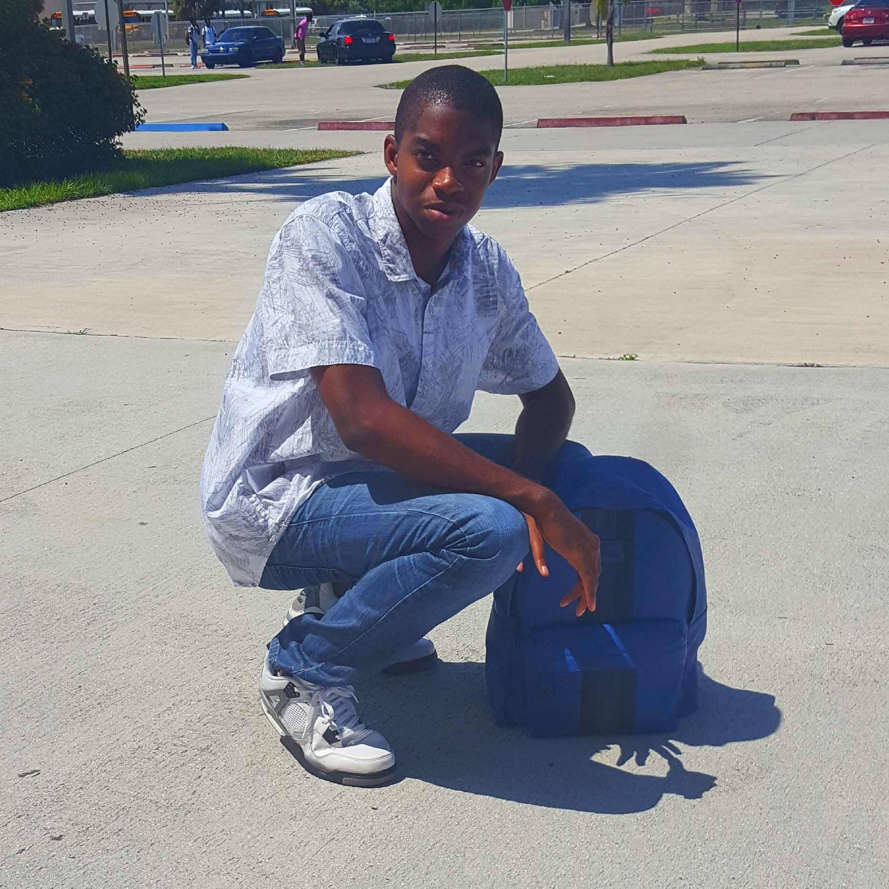
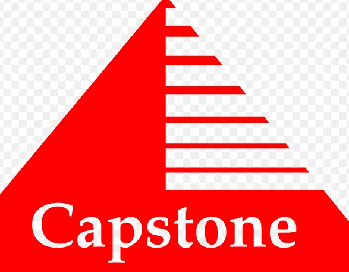

About me

An 'About Me' page should convey who you are, what your values and principles are, how you got to where you are, and why your product or service is important to you.
Highlights:
- Find pictures
- Create overall project vision
- Solve project objectives
- Deliver project responsibilities within deadlines
- Document progress, setbacks, and new processes
Interactive Interface
This project aims to demonstrate your understanding of fundamental topics of designing and implementing multimedia on the internet, the underlying computer technology that supports it, and hands-on projects incorporating the concepts.
Highlights:
- Solve problems with resources
- Create the project plan
- Create overall project vision
- Take inventory of project resources
Capstone

This project is to put everything together that you have learned over the four years. This is a group project with three or more people in the group.
In this group I have many roles I'm a group leader, Project sponsor, Project team member.
Highlights:
- Manage components of the plan
- Pivot directions when problems arise
- Deliver project responsibilities within deadlines
- Document progress, setbacks, and new processes